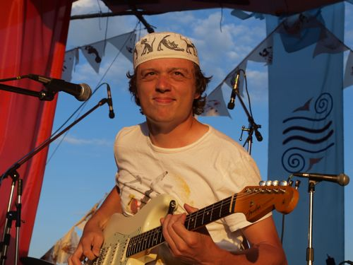
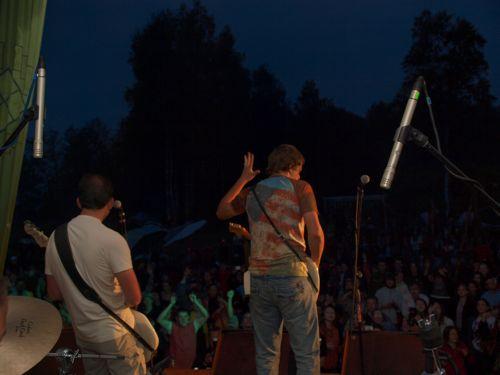
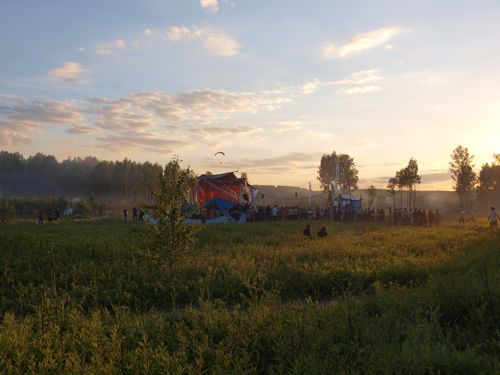

На "Пустых Холмах" было фантастически хорошо!

Было хорошо просто все - чудесная компания... друзья. 3 дня счастья. Жарили мясо, пили, что попало, гуляли... медитировали... Музыки просто невероятное количество. Совершенно убили Disen Gage, Аддис-Аббеба и ДетиДетей - очень круто!!! Еще было много очень хороших групп, но далеко не всех удалось послушать - потому что требовалось сохранять какое-то внутреннее равновесие для своих дел и выступлений. Поджемовал в космическом ночном джеме Силуянова и Вани Жука на сцене Воздух. Сыграли веселый стебовый сет с группой Disen Gage на свободной сцене. Я вообще их фанат, и вместе вроде все тоже очень даже складывается, потому что ребята настоящие. Кто не был там, вряд ли поймет, группа в общем-то играет прогрессив-рок и авангард. Посидели с утра, поиграли на сцене Леши Силуянова размеренный блюз и медитативный джем.А на третий день начался жескач. 14-го числа тот мегаплан, который я заложил для сета "Блюза на Холмах", в целом пошел к черту... Для начала убрали "Улицу Космонавтов", им было проще играть днем. Самый облом вышел у Вадика Иващенко.. он приехал еще в первый день (12-го) - должен был выступать на сцене "Воздух", но рухнул мост, и ребята простояв там 3 часа, уехали обратно, потому что на следующий день им надо было играть на "Усадьбе-джазз". 14-го Вадик уже поехать не смог, и я его прекрасно понимаю... В общем, я сразу понял, что это анрил все, поэтому и отказался от выступления на Усадьбе. Все-таки Холмы для меня - самый главный фестиваль на этой планете.
Все осложнялось еще тем, что не было сотовой связи. Чтобы прозвонить, надо было отбежать на километр-полтора вдаль и оттуда звонить, прыгая и изворачиваясь.. Люди вообще отправляли смски подбрасывая телефоны. У группы Соул Мейт слетел вокалист, и они только еще ехали на фест, а Вова Демьянов был до финала просто под огромнейшим вопросом.. то ли да, то ли нет.. то ли с группой, то ли без. Джерри Эпшайн к третьему дню просто уехал нафиг. Не знаю, что там у него случилось. Только Юра Каверкин приехал со всей группой еще за день, продемонстрировав свою высочайшую надежность. Ну и мы конечно были... куда же без нас. Еще были Ваня Жук и Леша Силуянов, но Жук в результате завис на другом своем выступлении с "Наеховичами", и мы его на нашей сцене так и не дождались.

В общем, побегав с телефоном пол утра 14-го и поговорив с координатором нашей сцены Ариадной, я неслабо опух, и по-сути составил новый план происходящего, а весь вечерний блюзовый сет становился под большой вопрос. Потом пошел сильнейший дождь. Мы пришли к нашей сцене "Земля", где пока еще не было никого из музыкантов вообще, хотя все уже полчаса как должно было начаться... как-то мне стало сразу совсем грустно. Мы должны были играть 3-ми, но я уже был готов играть сразу, - потому что, все-таки, я за все это отвечал. А народ у сцены танцевал транс под ливнем, казалось - дашь блюз и все разбегутся.И тут случилось чудо. На сцене у Силуянова залило генератор, и группа, которая там должна была уже выступать - зависла. Ариадна быстро сорентировалась и вытащила ее к нам. Пришли ребята - акустические гитары, ритм секция, перкуссия, виолончель и вокалистка. Мокрые с инструментами вышли на сцену и, быстро настроившись, заиграли... И все... Это было просто подарок... невероятная энергия, клевые песни, постоянный драйв... В общем, если мы потом сыграли действительно хорошо, то это спасибо белорусской группе "ДетиДетей"... Смотря на то, как они играют, какая энергия идет от вокалистки и от каждого из них, я просто сразу забыл о заебе, профессиональных блюзовых му...зыкантах и прочей ерунде. А в это время друзья помогали - Миша ходил километры под дождем, чтобы позвонить потерявшимся, Аня координировала проезд СоулМейт, Ира с Костей раздавали флаера... Ариадна бегала и смотрела, чтобы все как-то происходило вообще... На сцену наконец вышел необкуренный вжопито техник...
Мы дали сыграть ДетямДетей сколько хочется и еще чуть-чуть. Потом приехали Соулмейт, и мы пошли выступать, и нас поперло: наконец только втроем, с полной самоотдачей и с наиболее полным пониманием того, где мы и зачем... народ собрался, стемнело. Всех попрело, и дальше самоотдача музыкантов уже не спадала. Звук на сцене и "в зале" был офигенный. СоулМейт играли без основного вокалиста в трио, но ребята сделали отличную программу с минималистичным вокалом, но с большим кайфом и разообразием хорошего блюз-рока и фанка. Потом Юра Каверкин вдарил жесткого корневого блюза с приехавшим Демьяновым на гитаре и Сашей Соловьевым на гармошке. Снова пошел дождь, но народ уже не расходился! И на финальный аккорд я уже быстро состыковал ситуацию и запустил играть Демьянова с Сергеем Виноградовым и его же барбанщиком из Соул Мейт, а на басу замечательно отыграл Вася Рогожин, который невероятно удачно появился. И это тоже был супер сет.

Около двух мы закрыли сцену, потому что не холтелось смазывать такую красоту хаотичными джемами, а Ваня Жук и Леша Силуянов так и не появились :( Но тем не менее, по-моему было уже "как раз". Хотели было сразу поехать домой, но организаторы обрадовали нас, сказав что в такие дожди ехать по административной дороге нельзя.. и даже Нива у них там села. Поэтому мы поехали только утром... Утром уже вполне проехали и мы на субарке и хундай матрикс, хотя грязища была знатная.Через день после фестиваля на джем "Блюз с Холмов" в Доме у Дороге собралось совершенно невероятное количество слушателей. Джем вели мы - "The Jumping Cats". Сначала поиграли сами, потом к нам начали присоединятся боевые соратники с фестиваля: Иван Жук, Юра Каверкин, Алексей Силуянов. Неожиданно появился Владимир Кожекин, а финалом вечера стал выход на сцену Z-Star, звезды фестиваля Усадьба Джазз, с песней "Roadhouse Blues". Что она вытворяла страшно даже рассказывать... Пела нереально, падала на людей и барабаны. Вообще концерт состоялся очень удачный!
Вообщем невероятный Кайф! Невероятное настроение!!! У нас супер-группа, у нас замечательные друзья. Фестиваль "Пустые Холмы" - это отдых и энергия... это каждый раз музыкальные открытия - такие, как в этот раз - Аддис-Аббеба и ДетиДетей. Это совсем новый угол зрения на многие вещи. Прошлые холмы помогли мне лучше понять то, что мне нужно от всего этого.. от всей этой музыки и концертов... так что год от холмов до холмов получился практически отчетный.. собралась настоящая цельная группа, у группы даже появились свои супер-надежные друзья и слушатели. Теперь у всех нас вместе появилось еще много отличных ощущений и настроенией... наверняка они тоже не пропадут - нам явно есть чем занятся.
Спасибо Холмам!!!
Blues.Ru -
Новости |
Музыканты |
Стили |
CD Обзор |
Концерты |
Live Band |
Форум